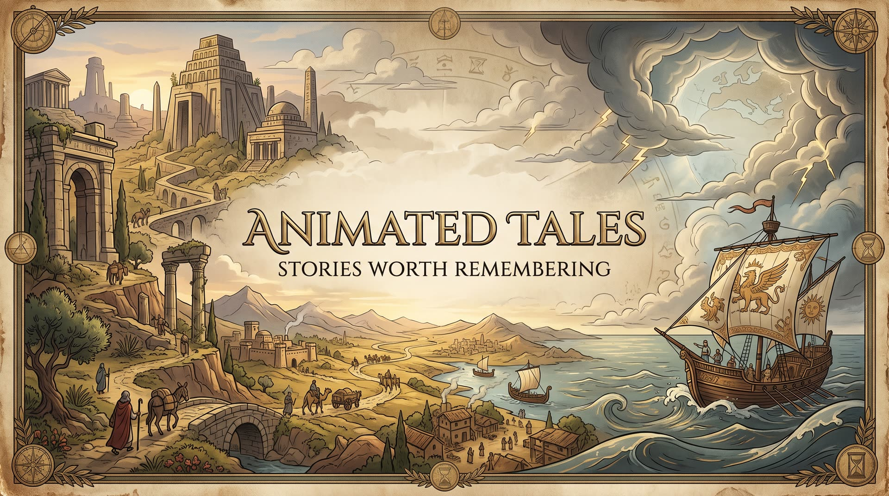

Animated Tales
One story from history or myth, told in about five minutes and drawn by hand in 2D.
About the channel
Stories worth remembering
Animated Tales takes one story from ancient history or mythology and tells it from start to finish: the setup, the turning point and the ending. A king misreads an oracle. A god puts his hand in a wolf's mouth. Sponge divers pull a lump of bronze from a shipwreck and nobody notices the gears inside for two years.
Each episode runs three to five minutes, and nothing is added to fill time. When a story is finished at three minutes, the video ends at three minutes. The narration keeps a clear line between what the sources record and what later tradition tells.
The channel is made by one person. AI tools help with research drafts, the narrator's voice and the hand-drawn-style illustration and animation. A person chooses every story and reviews every episode before it goes out.
- Episodes
- 10
- Shorts
- 10
- Playlists
- 8
- Running time
- 3:09 to 5:08
Where the stories come from
- GreeceMarathon, Antikythera
- RomeThe sack of 390 BC
- EgyptRamesses III
- Han ChinaThe heavenly horses
- LydiaCroesus and the oracle
- The NorthTýr and Fenrir
- The PacificPolynesian wayfinders
- OlympusThe Greek gods
Featured episodes
Start with one of these
Six favourites to begin with. Pick a playlist to see the episodes in it, and the Shorts that go with them.
A series to watch in order
The Greek Gods
Three brothers draw lots for the sky, the sea and the underworld. Their three sisters are left with marriage, the harvest and the hearth, and each finds out what that is worth. The series follows the Olympian family one generation at a time.
Open the Greek Mythology playlistHow each episode is made
From an old source to a finished tale
The voice comes first and the pictures are cut to it, never the other way round.
-
1
A story is chosen
Ideas are scored on ten points, from the strength of the hook to how solid the history is. Then a person picks one.
-
2
Every claim is sorted
The research files each statement as historical record, tradition or open debate, and the script keeps them apart.
-
3
The narration comes first
The voice-over is recorded and measured before any picture is made. Every shot gets its own place on that timeline.
-
4
The frames are drawn
Hand-drawn 2D illustration with clean dark outlines. Each character, place and key object has one fixed description, so Týr looks like Týr in every shot.
-
5
Animated and cut
The frames are animated, cut to the voice and given subtitles written for the episode, not YouTube's automatic ones.
Three kinds of claim, kept apart
Real lines from the research notes for the Antikythera episode.
On 17 May 1902, Valerios Stais noticed a gear wheel in one of the fragments.
Backed by records or physical evidence. Told as fact.
A diver surfaced claiming the seabed was covered with corpses and horses.
A crew anecdote. The script says "according to the story the crew told".
When was the mechanism built? Estimates run from about 205 to 87 BC.
Uncertain or disputed. The script keeps one short hedge.
The look
Story in motion
Detailed hand-drawn 2D illustration, clean dark outlines, expressive characters and layered environments. On the right: Zeus at the war of the Titans, Fenrir with the broken chains behind him, and a Polynesian voyaging canoe sailing from sunset into the stars.
Under a minute
Shorts
One moment from a story, vertical and short. Each one leads to a full episode.
The next tale is on the way
New episodes go up on YouTube. Subscribe and you'll get the next one when it's out.